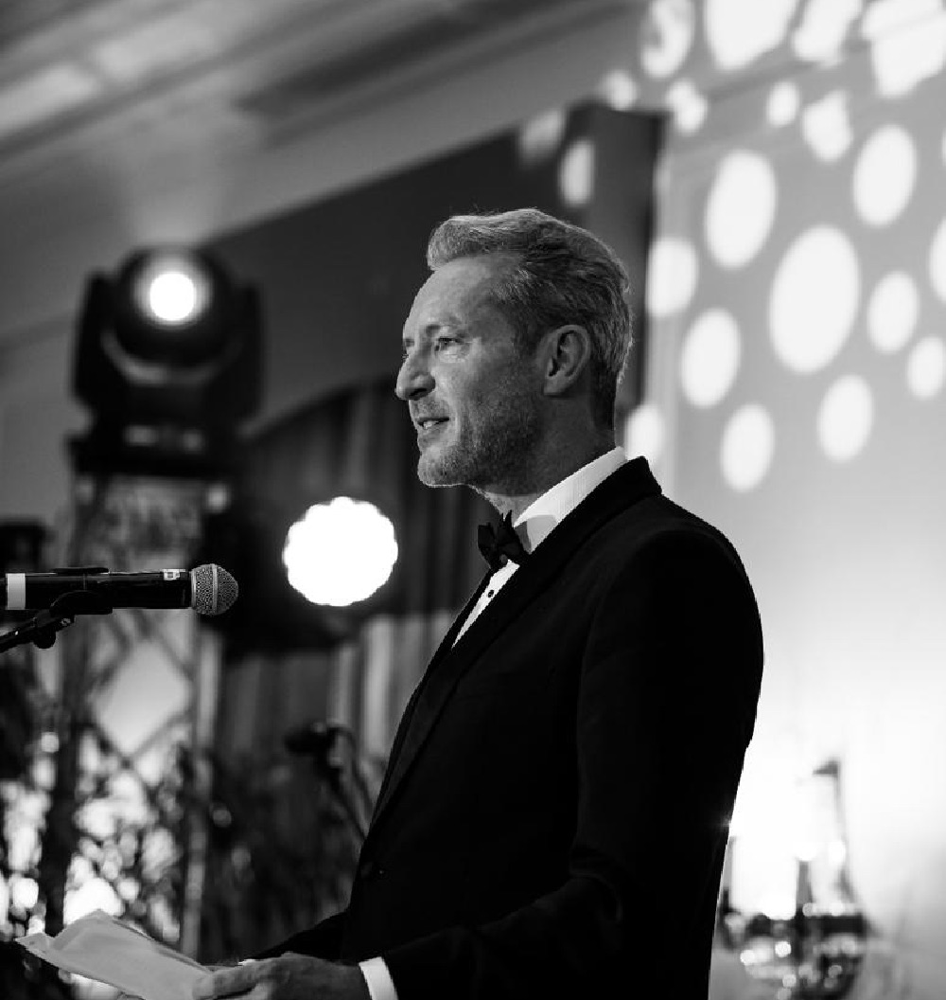

Founder
Guillaume Rambourg
For as long as he can remember, Guillaume Rambourg has been acutely aware of injustice, and of the gap between the privileged and the have-nots — an awareness shaped by an upbringing in New York and by travels across Africa with his father, a United Nations diplomat.
Early in a successful career in finance in London, he began supporting causes dear to him, such as human rights and peace initiatives. In February 2011 he established the Rambourg Foundation with the Charity Commission for England and Wales, to sponsor initiatives and structure projects properly.
- Founder, Rambourg Foundation (2011)
- Executive producer, The Voice of Hind Rajab
- Associate producer, The Man Who Sold His Skin